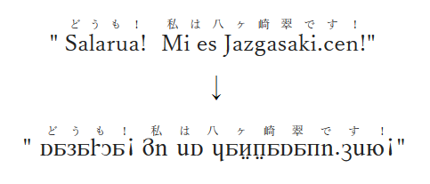

具体的には【 a～z , A～Z , 0～9 , ! , # , $ , & , ' , + , - , = , ? , @ , \ 】が対象です。

本文のみに適用: ← コピーして使ってね
ページ全体に適用: ← コピーして使ってね
日本語の明朝体を維持しつつ対象の文字のフォントだけを変更する為に長ったらしいコードになってるけど許してね。
ページ全体に適用の方はbodyタグを対象にしてるから、基本的には全てのサイトでリパーシェにできるよ。でもリパーシェにならないこともあるよ。
対象の文字を無差別にフォント変更する性質上、文脈上ローマ字やアラビア数字として表示されるべき部分もリパーシェにしてしまう事があります。
Windows 10 Firefox と iOS 12 Safari で動作確認しました。Android端末は知らない。
ただフォントを変更するだけのスクリプトですが、使用は自己責任で。
ブックマークレットってなんぞ？
ブックマークレットとは、ブラウザのブックマーク（お気に入り）に保存して利用するプログラムで、本来のサイトの機能とは別にユーザー側で使う物です。Javascriptで記述されているのでサイト運営側には負担がかからず、ユーザーの端末で勝手に機能するだけですので特に心配する事はないですよ。多分。
使い方
- まず↑の javascript:(function(){…… をどちらか片方コピーしてください。
- 適当なサイトをブックマークします。（一時的なものなのでどこでも大丈夫、このサイトでOK）
- 登録したブックマークを編集し、URLの部分に先ほどコピーしたスクリプトを上書きし、名前も分かりやすい物に変更します。
- これで準備は完了です。 あとはカクヨムいせにほでそのブックマークを開くとプログラムが作動します。
- ページを更新・移動すると元に戻ります。次のページに行くたびに使う必要があります。
フォントについて
このブックマークレットで使われているフォントはここの「Cilkurleen_Cirlxarli_E.woff」です。巻き舌のRだけ「cirlxarli_liparxe_1.woff」を混ぜた。
日本語の明朝体はカクヨムに倣って游明朝とヒラギノ明朝ProN。
それぞれWindowsとiOSに標準搭載されているフォント。
他
作った人 : fixa siertija cedonija (Twitter)コード改変はご自由にどうぞ。
なんで背景が黒いのかって？目に優しいからです。フェリーサ。